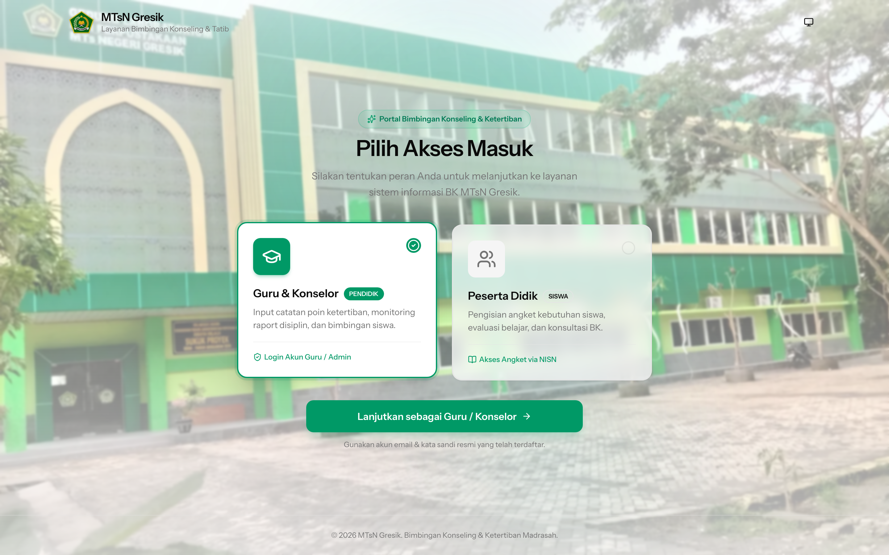

Case Study / Full-Stack
BKMTsNGresik v2
Building a Positive Discipline & Counseling Engine
How we built a production web portal with Laravel 12 & Inertia React to replace paper tracking with continuous behavioral scoring and automated bulk report generation.
PHP 8.4
Laravel 12
Inertia.js v2
React 19
TypeScript
Tailwind v4
bk.mtsngresik.sch.id — Landing Page
